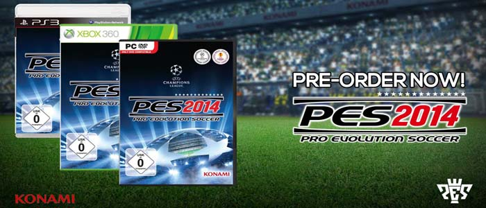

Second Product
PES2014 has tried to mould itself much closer into a more modern representation of the game putting the emphasis on simulation more than it has ever before. The tweaks and improved game engine mechanics feel more substantial and noticeable than they have done in the last few PES games and while it should make it a tougher game to master, it should still offer that same satisfying football feeling.
Formats: PC, PS3, PS4, Xbox 360 and Xbox One
Released: 2013 | FIFA 14 preview


Copyright @ 2013 All Right Reserved